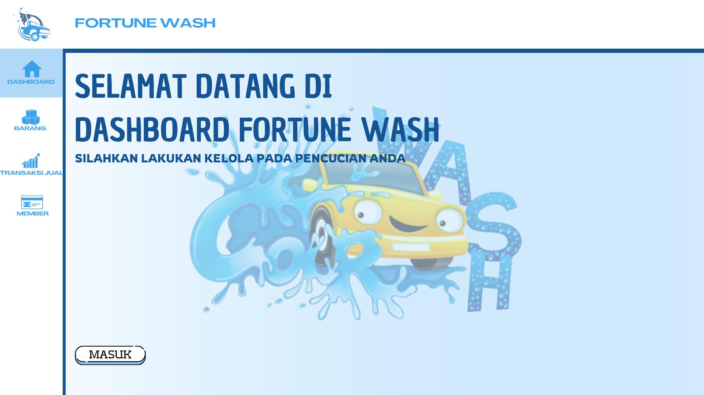
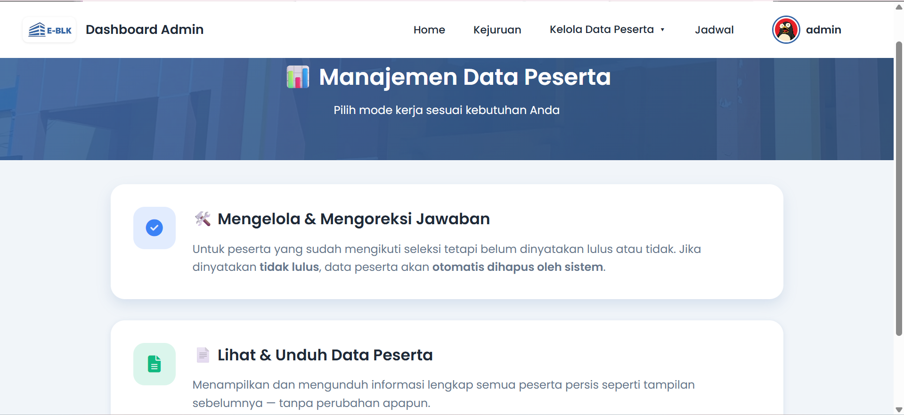
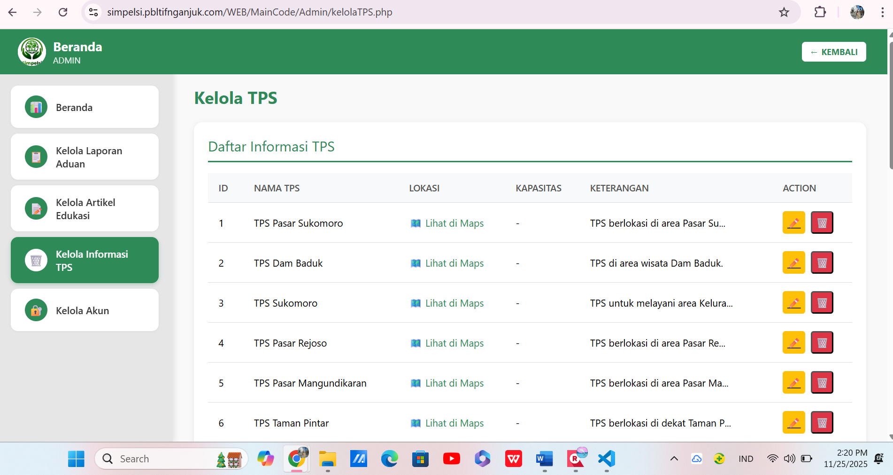

Pengalaman & Proyek

UI/UX Designer – Fortune Wash (Aplikasi Kasir Desktop)- Merancang antarmuka aplikasi kasir untuk UMKM pencucian kendaraan.
- Mendesain dashboard untuk owner dan karyawan agar mudah digunakan.
- Mengembangkan pengalaman pengguna pada fitur transaksi, member, dan laporan.
 UI/UX Designer – Study Club
UI/UX Designer – Study Club
- Membuat rancangan desain UI/UX kreatif dalam kegiatan study club.
- Mengembangkan ide desain berdasarkan kebutuhan pengguna.
- Berkolaborasi dengan tim untuk meningkatkan pengalaman pengguna.

Web Designer – UPT BLK Nganjuk- Membantu developer membangun front-end serta back-end sistem.
- Mengubah proses seleksi manual menjadi platform digital yang efisien dan terorganisir.
- Merancang antarmuka website sistem seleksi UPT BLK Nganjuk.

Software Tester – SimPelSi- Melakukan pengujian fungsionalitas aplikasi pelaporan sampah ilegal untuk mendeteksi bug.
- Meninjau hasil pengerjaan kelompok lain guna menjaga kualitas dan validitas fitur.
 Sie Acara | TIF Exhibition 2.0 2025
Sie Acara | TIF Exhibition 2.0 2025
 Sie Konsumsi | TIF Exhibition 3.0 2026
Sie Konsumsi | TIF Exhibition 3.0 2026